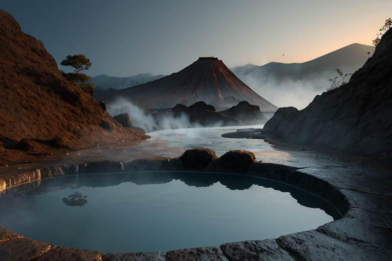
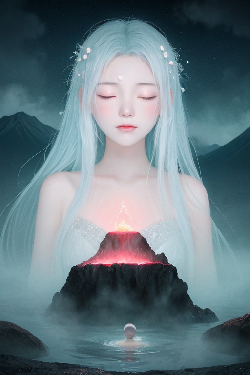
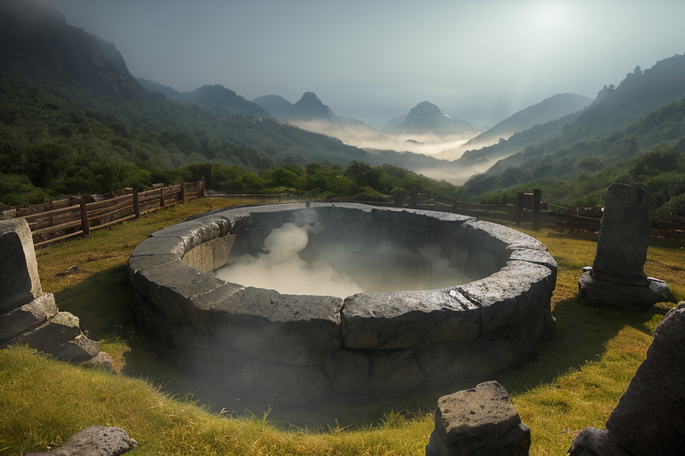
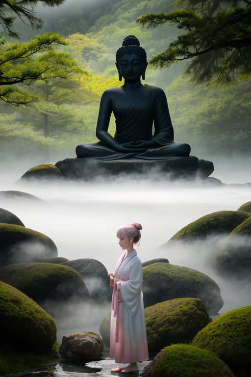
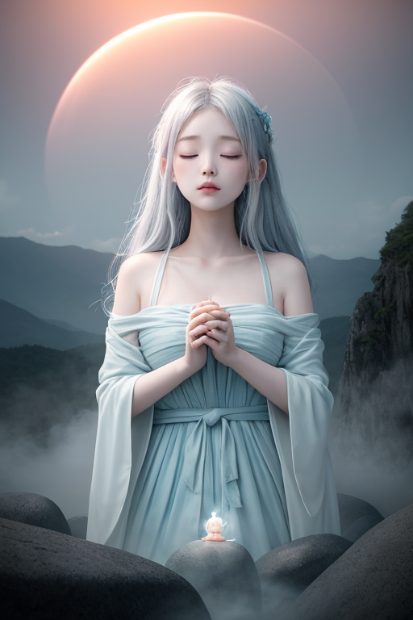

第一章 現実の大分
あなたはまだ気づいていない。この土地にも、王がいることを。
別府の地獄めぐりは、今日も湯煙を立ち上らせていた。血の池地獄の鈍く赤い水面、海地獄の透き通る青。それは美しいが、同時に、この土地の深部に眠る膨大な熱量と圧力の、ほんの表れに過ぎない。くじゅう連山の稜線は優しい曲線を描くが、その下には火山の火種がくすぶり、大地は絶えず微かに歪んでいる。臼杵石仏の岩肌に刻まれた仏たちは、雨風にさらされ、静かに摩耗し続けていた。癒しの地として知られるこの風景の底には、常に「封じられたもの」の気配が、湯気のように漂っている。
その歪みを、目に見えない糸で整える者がいた。湯王、オオイタリア・ミストである。彼は今、由布岳の麓に立ち、掌から微かな薄青色の光を放ちながら、地下の熱水系にわずかな圧力調整を加えていた。大きな災害を消すことはできない。せいぜい、小さな噴気の位置を数センチずらし、微弱な群発地震の一回を消し去る程度だ。彼の仕事は、派手なものではない。湯煙のように静かで、そして、消えやすい。

第二章 歪みの兆候
別府地獄めぐりの「海地獄」の池面が、昨日までより僅かに青く、深く淀んで見えた。観光客の賑わう声の向こうで、オオイタリア・ミストは微かな違和感を感じ取っていた。湯煙の妖精ミスティアが、いつもより速く舞い、熱を帯びている。
「王、湯脈の圧力が……通常の調整範囲を超えて上昇しています。特に、くじゅう連山の西麓から国東半島にかけてのラインで」
妖精の報告は静かだが、その内容は不穏だった。これは単なる地殻の変動ではない。王国の基盤である「湯封印」そのものに、劣化の兆候が現れ始めているのだ。宇佐神宮の下に眠る古い歪みが、南蛮文化がもたらした異質な熱量の記憶と共に、ゆっくりと目覚めようとしている。
癒しの湯が、逃げ場を失った地の怒りへと変容する危険が、湯煙の奥でほのめいていた。ミストは薄青色の光輪を掌に浮かべ、臼杵石仏が沈黙で見守る大地の深部へと意識を伸ばした。封じたはずのものが、蠢く。

第三章 王の葛藤
臼杵石仏の岩肌に、朝露が伝う。それは冷たい水滴ではなく、微かに温もりを帯びた湯気であった。ミストは石仏の前に立ち、掌の癒光輪を凝視する。白と薄青の光は、地中から湧き上がる異質な熱量──南蛮の船がもたらした異界の記憶と、神宮の下に眠る古い歪みが混ざり合ったもの──を、かぼすの酸味のように鋭く感知していた。
「このまま封じ続けることは、癒しではない」
ミスティアが湯煙の中から囁く。
「歪みを内に閉じ込め、ただ静かにすることは、やがてより大きな破綻を招きます」
ミストは目を閉じた。くじゅう連山の稜線が瞼の裏に浮かぶ。山々は長い年月、地の怒りをその巨体で受け止め、静かに抱え込んできた。包容とは、ただ耐えることなのか。だんご汁のように、様々なものを渾然と抱え込むこの土地の在り方は、逃げているのか、それとも再生への準備なのか。
掌の光輪が微かに震える。解放すれば、一時的に大きな歪みが生じる。多くのものを揺るがす。しかし、封じ続ければ、やがて湯封印そのものが崩壊し、別府の地獄めぐりの如き熱湯が、この穏やかな田園を飲み込むかもしれない。
王は感情を持たないはずだった。それなのに、今、この選択を前に、胸の奥に重く澱むものがある。それを、彼はまだ「苦悩」と呼べずにいた。

第四章 妖精との対話
「あなたは、『癒し』を誤解なさっています。」
湯煙の妖精ミスティアが、臼杵石仏の陰から静かに現れた。その声は、湯けむりのように柔らかく、どこか哀しみを帯びていた。
「この地の癒しは、逃げ場ではありません。再生のための『間』なのです。宇佐神宮が八幡の総本宮として、異なる信仰をも包み込んだように。南蛮の文化が、かぼすの酸味のように、この地の味わいを深めたように。」
彼女は、王の掌の光輪を見つめた。
「湯封印は、歪みを無理に押さえつけるものではありません。熱すぎる想い、苦しみを、ゆっくりと冷まし、和らげるための装置。だんご汁が、具材の味を時間をかけて溶け込ませるように。でも、王様……あまりに長く封じすぎると、味は濁ります。熱は、内側から器を破るのです。」
ミスティアの目に、くじゅう連山の朝霧のような光が揺れた。
「私たちは、逃げるのでも、無理に沸き立たせるのでもなく、ちょうどよい湯加減を探し続けてきました。その答えは、あなたが今、感じ始めている『重さ』の中にある。それは、逃避ではなく、再生への胎動です。」

第五章 微調整と余韻
臼杵石仏の谷間に、かすかな振動が走った。それは地震ではなく、地底の湯脈が、長い封印の境界を押し広げようとする胎動だった。オオイタリア・ミストは目を閉じ、掌を地面にそっと触れた。彼の内側で、安堵という感情が、重い責任へと結晶しつつあった。
「逃げてはいない」彼は呟いた。「封じることで、沸き立つ力を蓄えさせてきた。今、その力を、少しずつ解き放つ時だ」
ミスティアとユフリアが両脇に立つ。三人の力が、湯煙のように薄く広がり、くじゅう連山の麓から国東半島へ、そして別府の地底へと浸透していく。微調整だ。沸騰寸前の湯を一度かき混ぜ、圧力を分散させる。宇佐神宮の静謐さを借り、南蛮文化がもたらした「外」との接点を思い起こし、内にこもった熱に風穴を穿つ。由布院の湯けむりは、いつもよりほんのり薄青色を帯びて立ち上った。
代償は、彼自身の「静けさ」だった。感情を進化させた王は、完全な調整者ではいられなくなる。これからは、癒しの微調整のたびに、人間たちの悲しみや焦りを、自身の内に少しずつ取り込んでいくのだろう。
湯煙はやがて収まり、大地は深い眠りに戻った。かぼすの香りが、夜風に混じる。
あなたの町にも、王がいる。